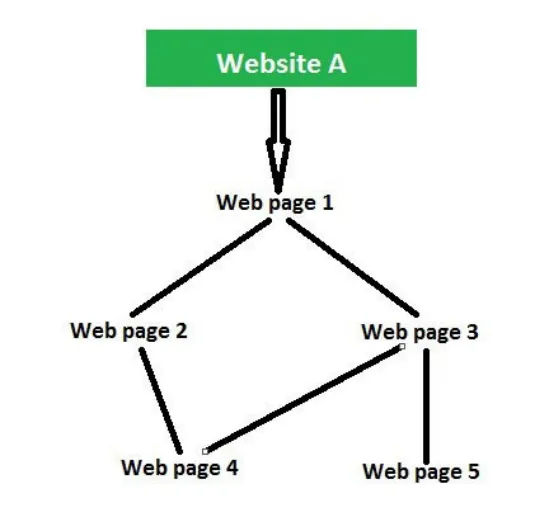
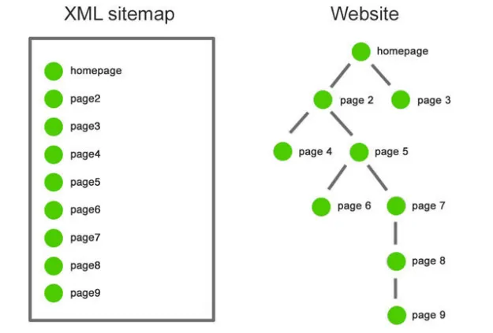

Here’s why smart linking is your secret weapon for SEO, trust, and user experience
In the age of digitalization, in almost everything in the world, but as we think for a while about all the traditional methods that we use for business, marketing, and promotions of products, and so on, but at that time we had no online option, so we did our business on-site but now it all shifted on internet and we reach more customers online from on-site. We used promotional links for internal and external marketing and made the products visible by providing affiliate links, and sometimes we used internal links on our websites. Internal links are hyperlinks that we use in websites, and if a customer clicks on that link, it will redirect to our products page, and buy something if they like something there. External links are also hyperlinks that redirect users/customers to another website and promote or sell products there, too. YouTube is the best example of external links, where all content creators provide external links in the description of a video for promotional purposes. In this article, we will learn about internal and external links in digital marketing and also understand why it is important for business success.
Internal links, also known as inbound links, are hyperlinks that direct or, we can say, redirect the visitor/reader to a specific (target) page of your website; whereas an external link is a hyperlink that directs the visitor/reader to a specific page on another website. External links can seem counterintuitive. However, you don’t want your valuable readers/visitors clicking on links that direct them away from your website. Linking to a high authority website/web page will also help you to appear to be an authority and can help search engines figure out what your content is really about for SEO purposes. It’s important for you to remember that other websites for different companies can also provide external links to your website in their own content. We have seen in many cases that if a company finds that your blog post has useful content, then they may link back to it as a source for their own blog. These types of links to your site can be a jackpot for your website/blog post as they boost your ranking in search engines using a search algorithm.
Benefits of Internal LinksMore and more internal links on a web page will help a reader/visitor to stay more and engage with your website longer. This may lead them to become a permanent reader/customer/follower of your website. These links are more accessible to the readers/visitors, and they increase the page authority of the web pages and the overall website. Internal links are usually used as a call-to-action. For example, the reader/visitor might be prompted to learn or read more about a topic by following that internal link, or else a reader may be asked to contact you or schedule a meeting. Adding internal links in your website/web page will also improve visibility and rank on a search engine. For the text of the hyperlink, the anchor text should be more to the point and an in-depth group of words that will help a search engine bot to “crawl” or understand your web page more effectively. Internal linking will help a bot of search engine to find other web pages on your website too. It is seen that a web page that is easy to navigate for a reader/visitor and search engine bots is properly indexed. This means that the web page will also be added to the search engine’s search result pages so that your site can be easily found by the end-users, as shown in the figure, which indicates the concept of internal link.
 Benefits of External LinksThe number of external backlinks and the quality of those external links that you use matter on your web page or website. Adding informative and trustworthy links to websites that are of high quality to your web pages will help you improve the credibility of your website, whereas adding poor-quality links might have a bad impact on your site. Linking to other web pages/websites will not make any bad impact on your page rank as long as the relatable content you are backlinking to comes from high authority websites. An external link has more value if it is linked to relevant and popular web pages that are related to the content that your web page and are highly ranked in the search engine. Valuable external links can be proven as a key factor in improving the authority of your website by providing a reader with references, as shown in the figure.
In SEO, Rankings refer to the position of a website in the search engine results page. Various ranking factors make an impact on search engines, such as whether a website should appear higher on the SERP based on the content relevancy to the searched keyword or phrase, or the quality of backlinks that a page has
In general terms, an XML sitemap is a list of total URLs of the website. It is like a roadmap for the search engines to give them information about what content is available and how to reach it. A search engine will find all nine pages that are in your sitemap with the help of the XML sitemap file, as shown below. On the website, the search engine will have to jump through five internal links to get to that page. XML site maps are a vital element of websites as they help in framing the architecture and are further capable of updating the content of present as well as new pages.
